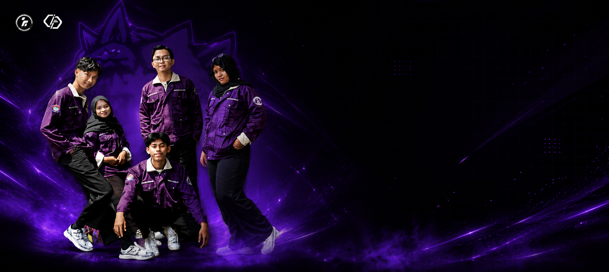

Himpunan Mahasiswa Program Studi Informatika — Universitas Amikom Purwokerto

mahasiswa@informatika:~$ whoami
Divisi Minat & Bakat — Kabinet Nawasena
mahasiswa@informatika:~$ cat status.json
{
"organisasi": "HMPS Informatika",
"kabinet": "Nawasena",
"program-kerja": 4,
"periode": 2026
}
mahasiswa@informatika:~$ ▍
jelajahi halaman